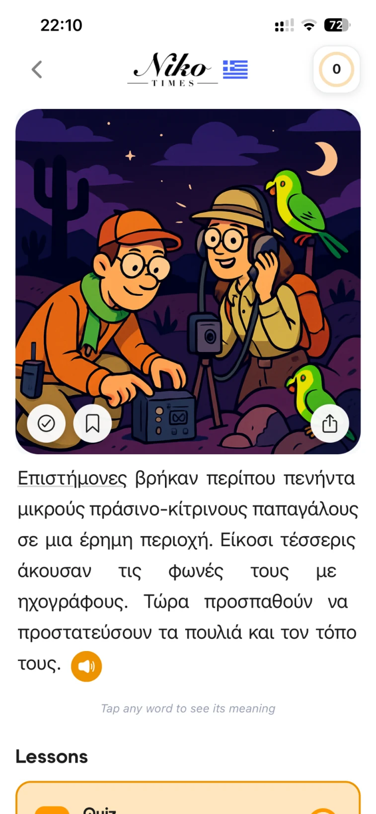
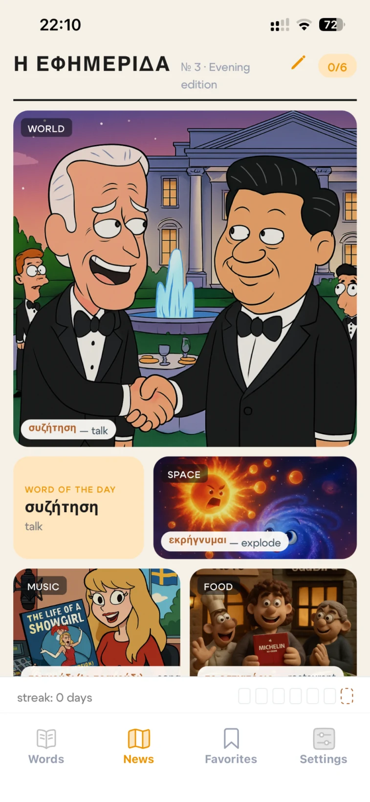
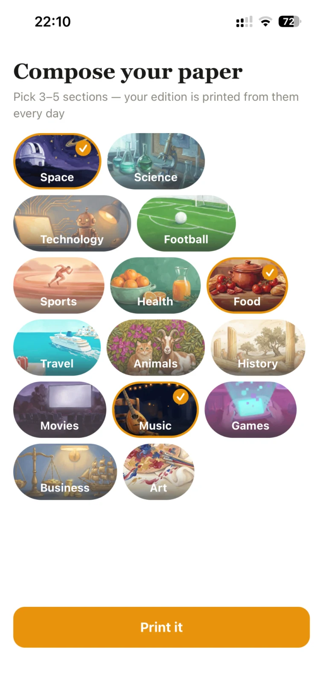
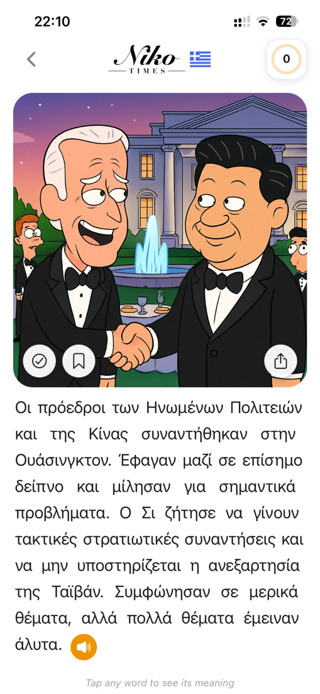
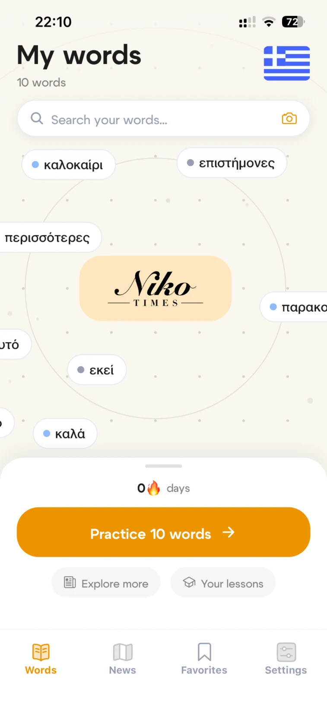
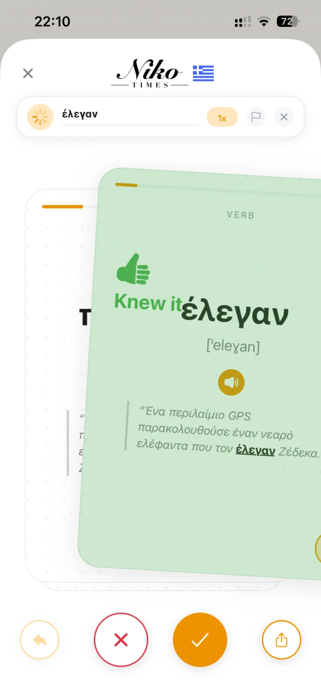

Новый
язык.
Новый взгляд.
Greekly превращает интересные вам истории в слова, которые хочется запомнить.
Μια ιστορία κάθε μέρα.Живой язык.


Газета для
любознательных.
Greekly вписывает изучение языка в повседневную жизнь. Персональный выпуск греческих историй Niko Times позволяет читать, слушать, сохранять слова и практиковаться.
Каждая история — маленький шаг от узнавания слова к пониманию мира вокруг него.

Ваши интересы.
Ваш выпуск.
Выберите интересные темы. Приложение соберёт вокруг них ежедневную газету, и привычка начнётся с настоящего любопытства.
Откройте газету.
Погрузитесь в историю.
Сначала изображение, затем греческое слово цепляет взгляд. Чтение ощущается как открытие, а не как упражнение.
Истории, собранные по интересам читателя.

Полноэкранная иллюстрация, греческий текст и озвучка в одном месте.
Читайте важное.
Запоминайте новое.
Одно касание
меняет смысл.
Слушайте статью или изучайте слово, не теряя нить истории.
учёные
Язык становится понятнее, когда живёт внутри истории.Найдите.
Сохраните.
Запомните.
У новых слов появляется своё место. Сохранённые слова становятся личной коллекцией, а затем короткой практикой.


Немного тепла.
Много характера.
Газетная структура, смелые иллюстрации и узнаваемый оранжевый акцент делают чтение живым и дружелюбным.
Aa αβγ
Истории становятся ближе,когда слова понятны.
Каждый день
ещё немного греческого.